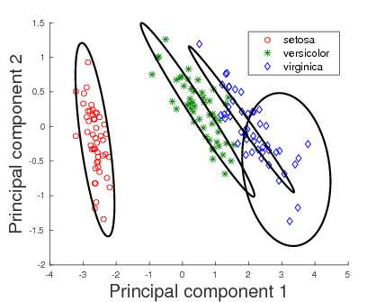

- Bayesian inference using Minimum Message Length (MML)
- Directional statistics
- Machine learning
- Computational Biology (applications in proteomics and genomics)
The thesis explores the Bayesian-information theoretic inference paradigm of minimum message length in model selection using some commonly used probability distributions. These include the Laplace and multivariate Gaussian distributions, along with directional distributions such as the multivariate von Mises-Fisher to model data on the unit hyper- sphere, the Kent distribution to model data on the three-dimensional (3D) sphere, and the bivariate von Mises distribution to model data distributed on the surface of the 3D torus. The inference framework has enabled the selection of optimal models by using the constituent parameters to better balance the trade-off from the model complexity and the goodness-of-fit to the data. This is demonstrated in the context of mixture modelling by developing a generic search method to determine the optimal number of mixture components to model the given data. Further, mixtures of directional probability distributions have facilitated the design of reliable computational models for protein structural data. Furthermore, the inference framework has been used for concise representations of protein folding patterns using a combination of non-linear parametric curves. These results are fundamental to various applications in protein structural biology.
Modelling data is important to facilitate our understanding and comprehension of the underlying distribution of the data. In practice, there are often different candidate models whose suitability needs to be objectively evaluated. Statistical model selection is important to explain the observed data efficiently. This thesis explores the problem of model selection and inference using the Bayesian-information theoretic principle of minimum message length (MML). In many inference problems, an optimal model is selected by balancing the model's complexity and its ability to faithfully explain the given data, that is, the goodness-of-fit. The use of MML-based inference is motivated by the characteristic nature of the framework to account for the model's parameters in determining the model's complexity.
Different criteria such as likelihood ratio, Akaike and Bayesian information criteria (Akaike, 1974; Schwarz, 1978), minimum description length (Rissanen, 1978) have already been formulated to achieve a reliable balance between the model's complexity and the quality of its fit. The model complexity, using these criteria, is often determined by the number of model parameters rather than by the actual parameters themselves. It is conceivable that the model's complexity may be dependent on the parameters, and not just their number. This is important in distinguishing closely competing models belonging to the same model class, for instance, when comparing two mixture distributions containing the same number of components and, consequently, the same number of model parameters.

To account for the contribution made by the parameters in quantifying the model complexity, Wallace and Boulton (1968) introduced the MML inference framework. In this framework, an inference problem is decomposed as the encoding of a two-part lossless message: the first part encodes the model's parameters and the second part encodes the data using those parameters. The model that results in the least overall message length is considered to be the best explanation of the data. In this framework, the probability of the model parameters is first computed by evaluating their optimal precision, which is then used to determine the complexity in terms of the Shannon information content.
Determining the precision to which the parameters are encoded is central to MML-based inference. Evaluating the precision leads to the problem of infinite regress (Oliver and Baxter, 1994). As a means of overcoming this problem, Wallace and Freeman (1987) proposed a practical approximation. This version of the MML formulation forms the foundation on which the model selection problems are investigated in this thesis. The MML-based parameter inference of some probability distributions, namely the Binomial, univariate Gaussian, Poisson, two and three-dimensional von Mises-Fisher distributions, and many others have already been done (Wallace, 2005).
The thesis, chiefly, explores the MML-based parameter estimation of some of the com- monly used probability distributions, whose parameters have not yet been characterized using the Wallace and Freeman (1987) approximation. These include the Laplace and multivariate Gaussian distributions, along with directional distributions such as the mul- tivariate von Mises-Fisher to model data on the unit hypersphere, the Kent distribution to model data on the three-dimensional (3D) sphere, and the bivariate von Mises distribution to model data distributed on the surface of the 3D torus. These distributions are widely used in statistical modelling tasks (McLachlan and Peel, 2000; Mardia and Jupp, 2000).
In addition, the MML framework has been developed to model mixtures of these distributions. A search method has been designed to infer the optimal number of mixture components that best describe the given data. As particular examples, vMF mixture models have been used to model high-dimensional text data, and mixture models of vMF, Kent, and bivariate von Mises have been employed to model directional data arising out of protein spatial orientations. Additionally, the MML inference framework has been used to generate concise representations of a set of 3D points using piecewise Bézier curves. This has been applied in the context of representing protein folding patterns using a combination of parameteric Bézier curves. Furthermore, the MML framework has been used to determine the optimal number of terms to approximate a Fourier series expansion, which has direct implications in modelling 3D protein structures using X-ray crystallography.
The thesis first outlines the derivation of the MML-based parameter estimates of a Laplace distribution. It then focuses on the multivariate Gaussian distribution and the derivation of its parameter estimates. The MML-based parameter estimates of both the Laplace and multivariate Gaussian distributions are demonstrated to have lower bias as compared to the traditionally used maximum likelihood estimators (Norton, 1984).
As modelling of empirical data is usually done using mixture distributions because of the multimodal nature of the data, the MML inference was explored in this context. In addition to the selection of a representative component distribution, it is also essential to determine an optimal number of mixture components. In this context, the MML framework is used to evaluate competing mixtures and choose the one that has the least total message length. Consequently, a search method was developed to achieve this objective and, as a first step, the mixture modelling apparatus was designed in the case of multivariate Gaussian distributions The superior performance of the search and inference method was demonstrated against the widely used one proposed by Figueiredo and Jain (2002).
The Laplace and Gaussian distributions are not suitable to model data with inherent directional nature. The directional probability distributions are hence, studied to model such data. The multivariate von Mises-Fisher (vMF) distribution was considered initially as it is the spherical analogue of the symmetric Gaussian wrapped on the unit hypersphere. The MML-based parameter estimates were derived and are compared with the contemporary estimators based on maximum likelihood estimation (Banerjee et al., 2005; Tanabe et al., 2007; Sra, 2012; Song et al., 2012). The MML estimators are demonstrated to outperform its competitors with respect to metrics such as bias, mean squared error and Kullback-Leibler (KL) divergence.
The mixture modelling method, formulated in the case of Gaussian distributions, was then extended to model data using vMF mixtures. The vMF distributions were previously used in clustering text documents (Banerjee et al., 2005), and protein dihedral angles (Dowe et al., 1996). Compared to the related work, the results obtained due to the MML-based search method demonstrate the ability of MML-based inference to infer optimal vMF mixtures in a completely unsupervised setting (Kasarapu and Allison, 2015).
The directional data in the case of proteins correspond to the orientations of the successive main chain carbon atoms based on their arrangement along the protein backbone. These are highly constrained to be distributed on a spherical surface. As the symmetric vMF distributions are used to model this protein directional data, the resultant vMF mixtures need not be the best models to describe the given data. This prompted the study of Kent distributions, defined on the surface of a unit 3D sphere. The study entailed characterizing the MML parameter estimates, which are demonstrated to outperform the traditional moment and maximum likelihood estimators (Kent, 1982). The search method was, then, adapted to handle mixtures of Kent distributions. As a specific example, Kent mixtures were employed in the modelling the spatial orientations.

The resulting vMF and Kent mixtures indeed serve as efficient descriptors of protein structural data. These are shown to be better alternatives as compared to the uniform distribution on the sphere which was previously used by Konagurthu et al. (2012) andCollier et al. (2014) in protein modelling tasks. The results following the application of Kent mixtures to model protein directional data demonstrate that they supersede the vMF mixture models. The ability of Kent distributions to model asymmetrical data leads to improved description of the protein structural data. Hence, they serve as natural successors to the vMF mixture models to describe protein structural data.
Both the vMF and Kent probability distributions are defined on unit spheres and are used to model data distributed on the spherical surface. A further extension is explored in the thesis to model directional data on the toroidal manifold using the MML framework. This is important to model the protein dihedral angles (different from the data considered in modelling using vMF and Kent distributions) and are not distributed on the spherical surface. As an example, mixtures of bivariate von Mises (BVM) distributions are considered to model the dihedral angles of proteins.
We consider two variants of the BVM directional probability distribution. One of the variant is the independent variant that does not account for the correlation between the dihedral angle pairs. The other variant called the Sine variant account for the correlation. We note that the empirical distribution of dihedral angles show a distinct correlation as evidenced by the asymmetrical spread of points on the toroidal surface. We infer mixture distributions of these two variants and as expected, the Sine variant results in a mixture with best overall explanation of the data, that is, it has the least total message length.
This thesis contributes further by applying the MML framework to objectively assess competing models for two other problems that are central in protein structural bioinformatics. Firstly, the inference framework is used in determining the suitable number and form of the Bézier curves that can model the given sequence of 3D points. An example application includes the modelling of protein folding patterns leading to their concise representations that are central to the analyses of protein conformations, including effective structural searches on large protein databases (Kasarapu et al., 2014).
Secondly, the inference framework is used to determine the optimal number of terms in the infinite series expansion of a periodic function decomposed using orthogonal basis functions. The motivating foundations of this problem lies in protein structure elucidation using X-ray crystallography, where the intensity values of the diffracted X-rays of crystallized protein molecules are converted to 3D models using an inverse Fourier transform. The cost-benefit trade-off of approximating using a longer Fourier expansion versus the smaller error rate is resolved using the MML objective.
In summary, the potential implications of my research outcomes are in the construction of rigorous statistical models that could be employed to model data in the Euclidean space and data that is directional. The thesis aims to develop novel computational models for modelling data with emphasis on 3D protein structural data. The models developed in conjunction with the inference framework have demonstrable applications in many domains, and as a case in point, employed in fundamental tasks of structural biology. From a theoretical standpoint, I have characterized the MML estimates of a variety of distributions as part of my research. In particular, I have advanced the state of the art with respect to modelling using directional distributions. The effectiveness of the MML approach to objectively assess models is the key theme that laid the foundations of my thesis.
The research contributions as part of my thesis are the following:
- Derivation of the MML-based parameter estimates of:
- Laplace distribution
- Multivariate Gaussian distribution
-
- Derivation of the MML-based parameter estimates of the following directional
probability distributions:
- Multivariate von Mises-Fisher to model data on the unit hypersphere
- Kent distribution to model data on the surface of a 3D sphere, and
- Bivariate von Mises to model data distributed on the surface of a 3D torus
-
- Mixture modelling
-
Conceptualization and implementation of a generic search method to infer the optimal number of mixture components that best describe the given data.
-
Modelling multivariate directional data using vMF mixtures, applications to high-dimensional text clustering and modelling three-dimensional directional data using Kent mixtures.
-
Design of efficient descriptors of protein data that can aid in modelling tasks in structural biology.
-
Using mixtures of bivariate von Mises distributions to model protein main chain dihedral angles.
-
- Modelling using curvilinear representations
-
Design of an inference framework to model 3D data with non-linear geometry using a combination of parametric Bézier curves.
-
Generating concise representations of protein folding patterns using piecewise Bézier curves, and their applications in database search and retrieval.
-
- Function approximation
-
Determination of the optimal number of terms to approximate the infinite series expansion of a periodic function using orthogonal basis functions.
-
- H. Akaike. A new look at the statistical model identification. IEEE Transactions on Automatic Control, 19(6):716-723, 1974.
- A. Banerjee, I. Dhillon, J. Ghosh, and S. Sra. Clustering on the unit hypersphere using von Mises-Fisher distributions. Journal of Machine Learning Research, 6:1345-1382, 2005.
- J. H. Collier, L. Allison, A. M. Lesk, M. G. de la Banda, and A. S. Konagurthu. A new statistical framework to assess structural alignment quality using information compression. Bioinformatics, 30(17):i512-i518, 2014.
- D. L. Dowe, L. Allison, T. I. Dix, L. Hunter, C. S. Wallace, and T. Edgoose. Circular clustering of protein dihedral angles by minimum message length. In Pacific Symposium on Biocomputing, volume 96, pages 242-255, 1996.
- M. A. T. Figueiredo and A. K. Jain. Unsupervised learning of finite mixture models. IEEE Transactions on Pattern Analysis and Machine Intelligence, 24(3):381-396, 2002.
- P. Kasarapu, L. Allison, Minimum message length estimation of mixtures of multivariate Gaussian and von Mises-Fisher distributions, Machine Learning, 100(2-3):333-378, 2015.
- P. Kasarapu, M. G. de la Banda, and A. S. Konagurthu. On representing protein folding patterns using non-linear parametric curves. IEEE/ACM Transactions on Computa- tional Biology and Bioinformatics, 11(6):1218-1228, 2014.
- J. T. Kent. The Fisher-Bingham distribution on the sphere. Journal of the Royal Statistical Society: Series B (Methodological), 44(1):71-80, 1982.
- A. S. Konagurthu, A. M. Lesk, and L. Allison. Minimum message length inference of secondary structure from protein coordinate data. Bioinformatics, 28(12):i97-i105, 2012.
- K. V. Mardia and P. E. Jupp. Directional Statistics. Wiley, Hoboken, NJ, USA, 2000.
- G. J. McLachlan and D. Peel. Finite Mixture Models. Wiley, New York, 2000.
- R. M. Norton. The double exponential distribution: Using calculus to find a maximum likelihood estimator. The American Statistician, 38(2):135-136, 1984.
- J. J. Oliver and R. A. Baxter. MDL and MML: Similarities and differences (introduction to minimum encoding inference). Technical report, Monash University, 1994.
- J. Rissanen. Modeling by shortest data description. Automatica, 14(5):465-471, 1978.
- G. Schwarz. Estimating the dimension of a model. The Annals of Statistics, 6(2):461-464, 1978.
- H. Song, J. Liu, and G. Wang. High-order parameter approximation for von Mises-Fisher distributions. Applied Mathematics and Computation, 218(24):11880-11890, 2012.
- S. Sra. A short note on parameter approximation for von Mises-Fisher distributions: and a fast implementation of I_s(x). Computational Statistics, 27(1):177-190, 2012.
- A. Tanabe, K. Fukumizu, S. Oba, T. Takenouchi, and S. Ishii. Parameter estimation for von Mises-Fisher distributions. Computational Statistics, 22(1):145-157, 2007.
- C. S. Wallace. Statistical and Inductive Inference using Minimum Message Length. Springer-Verlag, Secaucus, NJ, USA, 2005
- C. S. Wallace and D. M. Boulton. An information measure for classification. The Computer Journal, 11(2):185-194, 1968.
- C. S. Wallace and P. R. Freeman. Estimation and inference by compact coding. Journal of the Royal Statistical Society: Series B (Methodological), 49(3):240-265, 1987.